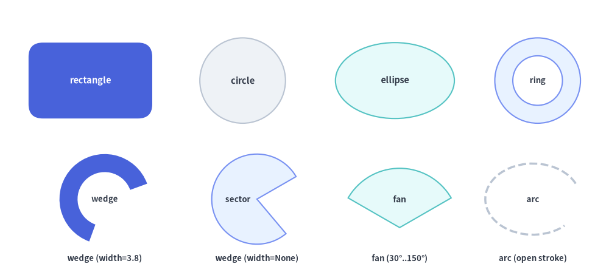
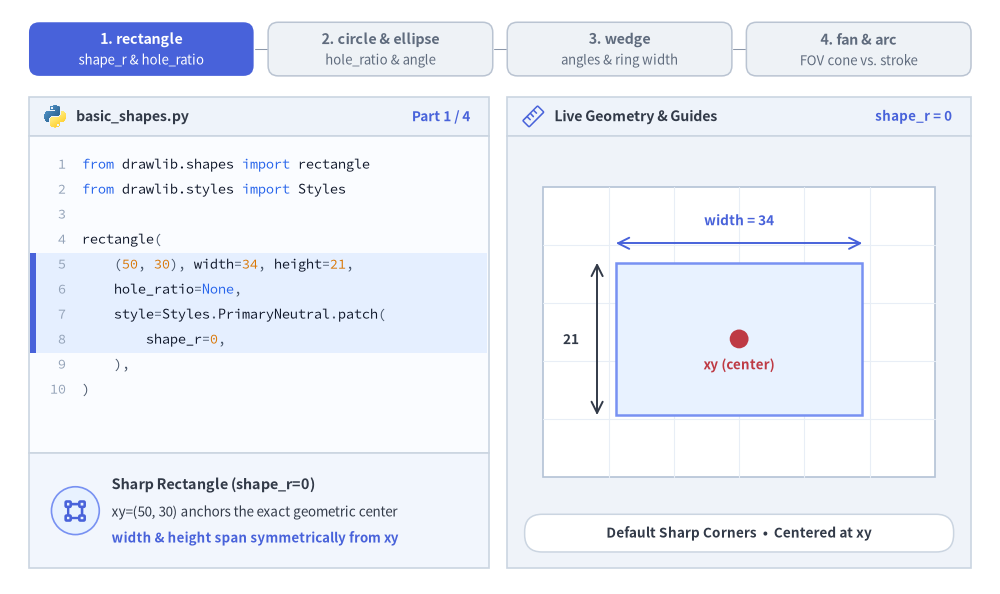
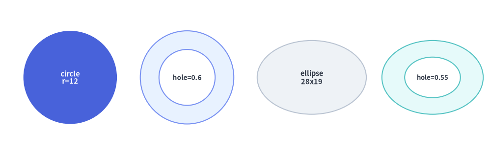

基本図形・放射状図形
drawlib.shapes の**基本図形・放射状図形（Basic & Radial）**カテゴリは、ほぼすべての技術図解で基盤となる 6 種類の幾何プリミティブを提供します。具体的には、矩形カードおよびフレーム（rectangle）、真円および中抜きリング（circle）、楕円（ellipse）、ドーナツリング断面および扇形ウェッジ（wedge）、円形パイセクター（fan）、そして開いた楕円弧ストローク（arc）が含まれます。

Source Code
from drawlib.canvas import save, setup
from drawlib.shapes import arc, circle, ellipse, fan, rectangle, wedge
from drawlib.styles import Styles
from drawlib.text import text
setup(width=128, height=58)
lbl_dark = Styles.DarkBold.patch(text_size=10.5)
lbl_white = Styles.WhiteBold.patch(text_size=10.5)
cap_st = Styles.DarkBold.patch(text_size=9.5)
# Row 1: rectangle, circle, ellipse, and hollow ring (hole_ratio)
rectangle(
(19, 41),
width=26,
height=16,
style=Styles.PrimaryFlat.patch(shape_r=3.0),
text="rectangle",
text_style=lbl_white,
)
circle((51, 41), radius=9.0, style=Styles.Neutral, text="circle", text_style=lbl_dark)
ellipse((83, 41), width=25, height=16, style=Styles.SecondaryNeutral, text="ellipse", text_style=lbl_dark)
circle(
(113, 41),
radius=9.0,
hole_ratio=0.58,
style=Styles.PrimaryNeutral,
text="ring",
text_style=cap_st,
)
# Row 2: wedge (donut slice), wedge (full sector), fan (FOV pie), arc (open stroke)
wedge(
(22, 16),
radius=9.5,
width=3.8,
angle_start=20,
angle_end=250,
style=Styles.PrimaryFlat,
text="wedge",
text_style=cap_st,
)
text((22, 3.5), "wedge (width=3.8)", style=cap_st)
wedge(
(54, 16),
radius=9.5,
width=None,
angle_start=30,
angle_end=310,
style=Styles.PrimaryNeutral,
text="sector",
text_style=cap_st.patch(xy_shift=(-4.0, 0)),
)
text((54, 3.5), "wedge (width=None)", style=cap_st)
fan(
(84, 10),
radius=12.5,
angle_start=30,
angle_end=150,
style=Styles.SecondaryNeutral,
text="fan",
text_style=Styles.DarkBold.patch(text_size=10.0, xy_shift=(0, 6.0)),
)
text((84, 3.5), "fan (30°..150°)", style=cap_st)
arc(
(112, 16),
width=20,
height=15,
angle_start=20,
angle_end=320,
style=Styles.DarkBold.patch(shape_line_style="dashed"),
text="arc",
text_style=cap_st,
)
text((112, 3.5), "arc (open stroke)", style=cap_st)
save()
1. 基本となるジオメトリ概念
全 6 種類のプリミティブは、Drawlib のデカルト座標空間と中心基準配置の規約（xy、ただし fan はコーンの頂点基準）を共有しつつ、手動の三角関数計算なしで各図形を直感的に変形できるパラメータを備えています。角丸（shape_r）、同心の中抜き（hole_ratio）、軸回転（angle）、反時計回りの角度スイープ（angle_start..angle_end）、およびリングの肉厚（width）によって各プリミティブがどのように変化するかを以下のアニメーションで確認できます。

Source Code
from __future__ import annotations
import math
from drawlib.anim import Animation
from drawlib.canvas import save, setup
from drawlib.icons import code as code_icons
from drawlib.icons import phosphor
from drawlib.lines import line
from drawlib.shapes import arc, circle, ellipse, fan, rectangle, wedge
from drawlib.smartarts import SourceCode, SourceCodeStyles
from drawlib.styles import Styles
from drawlib.text import text
W, H = 138.0, 82.0
setup(width=W, height=H)
anim = Animation(fps=10.0, loop=0)
CODE_TEXT_SIZE = 10.0
PT_TO_CANVAS = W / 720.0
FONT_CANVAS = CODE_TEXT_SIZE * PT_TO_CANVAS
LINE_H = FONT_CANVAS * 1.8
PAD_Y = FONT_CANVAS * 1.2
CODE_STYLES = SourceCodeStyles.get("default", font_lang="en", text_size=CODE_TEXT_SIZE).patch(
box_style=Styles.Neutral.patch(shape_fill_color=(0, 0, 0, 0), shape_line_width=0),
)
PANE_HEADER = Styles.Neutral.patch(
shape_fill_color=(238, 243, 250),
shape_line_color=(203, 213, 225),
shape_line_width=1.2,
shape_r=0.0,
)
EDITOR_BODY = Styles.Neutral.patch(
shape_fill_color=(250, 252, 255),
shape_line_color=(203, 213, 225),
shape_line_width=1.2,
shape_r=0.0,
)
TAKEAWAY_BODY = Styles.Neutral.patch(
shape_fill_color=(242, 246, 253),
shape_line_color=(203, 213, 225),
shape_line_width=1.2,
shape_r=0.0,
)
STUDIO_BODY = Styles.Neutral.patch(
shape_fill_color=(239, 243, 249),
shape_line_color=(203, 213, 225),
shape_line_width=1.2,
shape_r=0.0,
)
PART_ITEMS = [
("1. rectangle", "shape_r & hole_ratio"),
("2. circle & ellipse", "hole_ratio & angle"),
("3. wedge", "angles & ring width"),
("4. fan & arc", "FOV cone vs. stroke"),
]
def draw_step_bar(active_part: int) -> None:
"""Draw top 4-part progress bar (active_part is 1..4)."""
pill_w = 31.0
pill_h = 7.4
gap = 2.0
start_x = 4.0 + pill_w / 2.0
cy = 75.2
for idx, (label, sublabel) in enumerate(PART_ITEMS, start=1):
cx = start_x + (idx - 1) * (pill_w + gap)
if idx > 1:
prev_cx = cx - (pill_w + gap)
line(
(prev_cx + pill_w / 2.0 + 0.2, cy),
(cx - pill_w / 2.0 - 0.2, cy),
style=Styles.PrimaryBold if idx <= active_part else Styles.MutedThin,
)
if idx == active_part:
st = Styles.PrimaryFlat.patch(shape_r=1.4)
tst = Styles.WhiteBold.patch(text_size=10.3)
sub_tst = Styles.White.patch(text_size=9.5)
elif idx < active_part:
st = Styles.PrimaryNeutral.patch(shape_r=1.4, shape_line_width=1.1)
tst = Styles.PrimaryBold.patch(text_size=10.3)
sub_tst = Styles.Primary.patch(text_size=9.5)
else:
st = Styles.Neutral.patch(shape_r=1.4, shape_line_width=1.1)
tst = Styles.MutedBold.patch(text_size=10.3)
sub_tst = Styles.Muted.patch(text_size=9.5)
rectangle((cx, cy), width=pill_w, height=pill_h, style=st)
text((cx, cy + 1.35), label, style=tst)
text((cx, cy - 1.55), sublabel, style=sub_tst)
def draw_left_pane(
active_part: int,
code_lines: list[str],
hl_range: tuple[int, int],
icon_fn: object,
summary_title: str,
summary_line1: str,
summary_line2: str,
) -> None:
"""Draw left Python code editor + bottom geometric concept note."""
x0, w = 4.0, 63.5
cx = x0 + w / 2.0
top_y = 63.2
header_h = 5.4
editor_h = 43.8
takeaway_h = 15.8
rectangle((cx, top_y + header_h / 2.0), width=w, height=header_h, style=PANE_HEADER)
code_icons.python((x0 + 3.6, top_y + header_h / 2.0), width=3.4, style=Styles.Neutral)
text(
(x0 + 6.5, top_y + header_h / 2.0),
"basic_shapes.py",
style=Styles.DarkBold.patch(text_size=10.2, halign="left"),
)
text(
(x0 + w - 2.6, top_y + header_h / 2.0),
f"Part {active_part} / 4",
style=Styles.PrimaryBold.patch(text_size=9.8, halign="right"),
)
rectangle((cx, top_y - editor_h / 2.0), width=w, height=editor_h, style=EDITOR_BODY)
hl_start, hl_end = hl_range
hl_top = top_y - PAD_Y - hl_start * LINE_H
hl_bot = top_y - PAD_Y - (hl_end + 1) * LINE_H
hl_cy = (hl_top + hl_bot) / 2.0
hl_h = hl_top - hl_bot
rectangle(
(cx, hl_cy),
width=w - 0.6,
height=hl_h,
style=Styles.Neutral.patch(shape_fill_color=(229, 239, 255), shape_line_width=0),
)
rectangle(
(x0 + 0.55, hl_cy),
width=0.9,
height=hl_h,
style=Styles.PrimaryFlat.patch(shape_line_width=0),
)
SourceCode.draw(
xy=(x0, top_y),
width=w,
code="\n".join(code_lines),
styles=CODE_STYLES,
code_lang="python",
show_linenum=True,
align="top_left",
)
take_cy = 3.6 + takeaway_h / 2.0
rectangle((cx, take_cy), width=w, height=takeaway_h, style=TAKEAWAY_BODY)
circle(
(x0 + 6.4, take_cy),
radius=3.3,
style=Styles.PrimaryNeutral.patch(shape_line_width=1.2),
)
icon_fn((x0 + 6.4, take_cy), width=3.8, style=Styles.PrimaryBold) # type: ignore[operator]
text(
(x0 + 11.4, take_cy + 3.6),
summary_title,
style=Styles.DarkBold.patch(text_size=10.4, halign="left"),
)
text(
(x0 + 11.4, take_cy - 0.2),
summary_line1,
style=Styles.Dark.patch(text_size=9.7, halign="left"),
)
text(
(x0 + 11.4, take_cy - 3.8),
summary_line2,
style=Styles.PrimaryBold.patch(text_size=9.6, halign="left"),
)
def draw_geometry_studio(param_badge: str, footer_caption: str) -> tuple[float, float]:
"""Draw right geometry lab shell, inner coordinate sheet with subtle grid, and footer."""
x0, w = 70.0, 64.0
cx = x0 + w / 2.0
top_y = 63.2
header_h = 5.4
body_h = 59.6
rectangle((cx, top_y + header_h / 2.0), width=w, height=header_h, style=PANE_HEADER)
phosphor.ruler((x0 + 3.6, top_y + header_h / 2.0), width=3.4, style=Styles.Primary)
text(
(x0 + 6.5, top_y + header_h / 2.0),
"Live Geometry & Guides",
style=Styles.DarkBold.patch(text_size=10.2, halign="left"),
)
text(
(x0 + w - 2.6, top_y + header_h / 2.0),
param_badge,
style=Styles.PrimaryBold.patch(text_size=9.6, halign="right"),
)
rectangle((cx, 3.6 + body_h / 2.0), width=w, height=body_h, style=STUDIO_BODY)
# Inner coordinate sheet (54 x 40) with subtle grid lines visible through holes
sheet_cx, sheet_cy = cx, 36.2
sheet_w, sheet_h = 54.0, 40.0
sx0, sy0 = sheet_cx - sheet_w / 2.0, sheet_cy - sheet_h / 2.0
rectangle(
(sheet_cx, sheet_cy),
width=sheet_w,
height=sheet_h,
style=Styles.Neutral.patch(
shape_fill_color=(255, 255, 255),
shape_line_color=(180, 194, 214),
shape_line_width=1.2,
),
)
g_st = Styles.MutedThin.patch(line_color=(232, 238, 246), line_width=0.8)
for gx in range(1, 6):
vx = sx0 + gx * (sheet_w / 6.0)
line((vx, sy0), (vx, sy0 + sheet_h), style=g_st)
for gy in range(1, 5):
vy = sy0 + gy * (sheet_h / 5.0)
line((sx0, vy), (sx0 + sheet_w, vy), style=g_st)
rectangle(
(cx, 8.4),
width=59.2,
height=5.2,
style=Styles.Neutral.patch(
shape_fill_color=(255, 255, 255),
shape_line_color=(203, 213, 225),
shape_line_width=1.1,
shape_r=2.4,
),
text=footer_caption,
text_style=Styles.DarkBold.patch(text_size=9.8),
)
return sheet_cx, sheet_cy
# =========================================================================
# Part 1: rectangle — shape_r (scalar & 4-tuple) and hole_ratio
# =========================================================================
def rect_code(
shape_r_expr: str,
hole_expr: str = "None",
style_name: str = "PrimaryFlat",
) -> list[str]:
return [
"from drawlib.shapes import rectangle",
"from drawlib.styles import Styles",
"",
"rectangle(",
" (50, 30), width=34, height=21,",
f" hole_ratio={hole_expr},",
f" style=Styles.{style_name}.patch(",
f" shape_r={shape_r_expr},",
" ),",
")",
]
# 1A: Sharp rectangle + anchor & dimension rulers
with anim.frame(duration=3.2):
draw_step_bar(1)
draw_left_pane(
1,
rect_code("0", "None", "PrimaryNeutral"),
(4, 7),
phosphor.bounding_box,
"Sharp Rectangle (shape_r=0)",
"xy=(50, 30) anchors the exact geometric center",
"width & height span symmetrically from xy",
)
scx, scy = draw_geometry_studio("shape_r = 0", "Default Sharp Corners • Centered at xy")
rectangle(
(scx, scy - 1.0),
width=34.0,
height=21.0,
style=Styles.PrimaryNeutral.patch(shape_line_width=1.8),
)
circle((scx, scy - 1.0), radius=1.3, style=Styles.DangerFlat)
text((scx, scy - 4.6), "xy (center)", style=Styles.DangerBold.patch(text_size=9.6))
line((scx - 17.0, scy + 12.2), (scx + 17.0, scy + 12.2), arrow_head="<->", style=Styles.PrimaryBold.patch(line_width=1.4))
text((scx, scy + 15.4), "width = 34", style=Styles.PrimaryBold.patch(text_size=9.8))
line((scx - 19.6, scy - 11.5), (scx - 19.6, scy + 9.5), arrow_head="<->", style=Styles.DarkBold.patch(line_width=1.4))
text((scx - 23.2, scy - 1.0), "21", style=Styles.DarkBold.patch(text_size=9.8))
# 1B: Morph shape_r 0 -> 3.5 -> 7.0 (Uniform corner fillet)
for r_val, dur in ((3.5, 0.45), (7.0, 3.4)):
with anim.frame(duration=dur):
draw_step_bar(1)
draw_left_pane(
1,
rect_code(f"{r_val:g}", "None", "PrimaryFlat"),
(7, 7),
phosphor.corners_out,
"Uniform Corner Fillet (shape_r)",
"Scalar float rounds all 4 corners equally",
"Auto-clamped to min(width, height) / 2",
)
scx, scy = draw_geometry_studio(f"shape_r = {r_val:g}", f"Scalar shape_r={r_val:g} • Fillets All 4 Corners Equally")
cy_r = scy - 0.5
# Ghost sharp bounding box to show corner filleting clearly
rectangle(
(scx, cy_r),
width=34.0,
height=21.0,
style=Styles.MutedDashed.patch(shape_fill_color=(0, 0, 0, 0), shape_line_color=(180, 195, 218), shape_line_width=1.1),
)
rectangle(
(scx, cy_r),
width=34.0,
height=21.0,
style=Styles.PrimaryFlat.patch(shape_r=r_val),
text=f"shape_r = {r_val:g}",
text_style=Styles.WhiteBold.patch(text_size=10.5),
)
if r_val >= 7.0:
text((scx, cy_r + 14.2), "Dashed = Original Sharp Corners", style=Styles.PrimaryBold.patch(text_size=9.6))
# 1C: Per-corner 4-tuple shape_r=(0, 7, 7, 0)
with anim.frame(duration=3.6):
draw_step_bar(1)
draw_left_pane(
1,
rect_code("(0, 7, 7, 0)", "None", "SecondaryNeutral"),
(7, 7),
phosphor.corners_out,
"Per-Corner 4-Tuple Order",
"Order: (bottom_left, top_left, top_right, bottom_right)",
"(0, 7, 7, 0) creates a top-rounded header tab!",
)
scx, scy = draw_geometry_studio("shape_r = (0,7,7,0)", "4-Tuple Order: (1: bl, 2: tl, 3: tr, 4: br)")
cy_r = scy - 0.5
rectangle(
(scx, cy_r),
width=34.0,
height=21.0,
style=Styles.SecondaryNeutral.patch(shape_r=(0, 7.0, 7.0, 0), shape_line_width=1.8),
text="Header Tab",
text_style=Styles.DarkBold.patch(text_size=10.5),
)
text((scx - 16.5, cy_r - 13.8), "1: bl = 0", style=Styles.MutedBold.patch(text_size=9.6))
text((scx - 16.5, cy_r + 13.8), "2: tl = 7", style=Styles.PrimaryBold.patch(text_size=9.8))
text((scx + 16.5, cy_r + 13.8), "3: tr = 7", style=Styles.PrimaryBold.patch(text_size=9.8))
text((scx + 16.5, cy_r - 13.8), "4: br = 0", style=Styles.MutedBold.patch(text_size=9.6))
# 1D: Hollow concentric frame hole_ratio 0.30 -> 0.58
for hr, dur in ((0.30, 0.45), (0.58, 3.5)):
with anim.frame(duration=dur):
draw_step_bar(1)
draw_left_pane(
1,
rect_code("4.5", f"{hr:.2f}", "PrimaryFlat"),
(5, 7),
phosphor.bounding_box,
"Concentric Frame (hole_ratio)",
"Punches a true transparent compound cutout",
"Inner corner radii scale smoothly with hole_ratio",
)
scx, scy = draw_geometry_studio(f"hole_ratio = {hr:.2f}", f"Hollow Frame (hole_ratio={hr:.2f}) • True Transparent Cutout")
cy_r = scy - 1.0
rectangle(
(scx, cy_r),
width=34.0,
height=21.0,
hole_ratio=hr,
style=Styles.PrimaryFlat.patch(shape_r=4.5),
)
hole_w = 34.0 * hr
line(
(scx - hole_w / 2.0 + 0.5, cy_r),
(scx + hole_w / 2.0 - 0.5, cy_r),
arrow_head="<->",
style=Styles.DangerBold.patch(line_width=1.5),
)
text((scx, scy + 13.5), f"Inner Cutout = width × {hr:.2f}", style=Styles.PrimaryBold.patch(text_size=9.8))
# =========================================================================
# Part 2: circle & ellipse — hole_ratio and style.angle
# =========================================================================
for hr_expr, hr_val, dur in (("None", None, 0.55), ("0.58", 0.58, 3.4)):
code_c = [
"from drawlib.shapes import circle",
"from drawlib.styles import Styles",
"",
"# Annular ring: inner_r = radius * hole_ratio",
"circle(",
" (50, 30), radius=13.5,",
f" hole_ratio={hr_expr},",
" style=Styles.PrimaryFlat,",
")",
]
with anim.frame(duration=dur):
draw_step_bar(2)
draw_left_pane(
2,
code_c,
(5, 6),
phosphor.circle_half,
"Circle & Annular Ring",
"Always center-anchored at xy with outer radius",
"hole_ratio=0.58 carves inner radius = r × 0.58",
)
badge = "Solid Circle" if hr_val is None else "hole_ratio = 0.58"
scx, scy = draw_geometry_studio(badge, "circle(xy, radius=13.5, hole_ratio=0.58)")
cy_c = scy - 0.8
circle((scx, cy_c), radius=13.5, hole_ratio=hr_val, style=Styles.PrimaryFlat)
circle((scx, cy_c), radius=1.2, style=Styles.DangerFlat)
if hr_val is not None:
inner_r = 13.5 * hr_val
line((scx, cy_c), (scx + inner_r, cy_c), arrow_head="->", style=Styles.DangerBold.patch(line_width=1.5))
text((scx, cy_c - 3.2), "r×0.58", style=Styles.DangerBold.patch(text_size=9.5))
rad25 = math.radians(32.0)
line(
(scx, cy_c),
(scx + 13.5 * math.cos(rad25), cy_c + 13.5 * math.sin(rad25)),
arrow_head="->",
style=Styles.DarkBold.patch(line_width=1.4),
)
text((scx + 15.2, cy_c + 8.6), "radius", style=Styles.DarkBold.patch(text_size=9.6, halign="left"))
for ang, dur in ((0, 0.50), (14, 0.45), (28, 3.6)):
code_e = [
"from drawlib.shapes import ellipse",
"from drawlib.styles import Styles",
"",
"ellipse(",
" (50, 30), width=36, height=19,",
" hole_ratio=0.55,",
" style=Styles.SecondaryNeutral.patch(",
f" angle={ang},",
" ),",
")",
]
with anim.frame(duration=dur):
draw_step_bar(2)
draw_left_pane(
2,
code_e,
(4, 7),
phosphor.compass,
"Rotated Hollow Ellipse",
"width & height define full major/minor diameters",
"style.patch(angle=28) rotates CCW around xy",
)
scx, scy = draw_geometry_studio(f"angle = {ang}°", f"Elliptical Ring (36 × 19) • Rotated +{ang}° CCW")
cy_e = scy - 0.8
line((scx - 21.5, cy_e), (scx + 21.5, cy_e), style=Styles.MutedDashed.patch(line_width=1.1))
ellipse(
(scx, cy_e),
width=36.0,
height=19.0,
hole_ratio=0.55,
style=Styles.SecondaryNeutral.patch(shape_line_width=1.8, angle=ang),
)
if ang > 0:
rad = math.radians(ang)
line(
(scx - 20.5 * math.cos(rad), cy_e - 20.5 * math.sin(rad)),
(scx + 20.5 * math.cos(rad), cy_e + 20.5 * math.sin(rad)),
style=Styles.PrimaryDashed.patch(line_width=1.3),
)
arc(
(scx, cy_e),
width=39.0,
height=39.0,
angle_start=0,
angle_end=ang,
style=Styles.PrimaryNeutral.patch(shape_line_width=2.0),
)
text(
(scx + 21.5, cy_e + 5.2),
f"+{ang}°",
style=Styles.PrimaryBold.patch(text_size=9.8, halign="left"),
)
circle((scx, cy_e), radius=1.2, style=Styles.DangerFlat)
# =========================================================================
# Part 3: wedge — Counterclockwise Angle Sweep & Annular Wall Width
# =========================================================================
def draw_polar_compass(cx: float, cy: float, r: float) -> None:
"""Draw polar degree compass guides at 0, 90, 180, 270 degrees."""
circle(
(cx, cy),
radius=r,
style=Styles.MutedDashed.patch(shape_fill_color=(0, 0, 0, 0), shape_line_color=(190, 202, 220), shape_line_width=1.0),
)
line((cx - r - 2.2, cy), (cx + r + 2.2, cy), style=Styles.MutedDashed.patch(line_width=0.9))
line((cx, cy - r - 2.2), (cx, cy + r + 2.2), style=Styles.MutedDashed.patch(line_width=0.9))
lbl_st = Styles.MutedBold.patch(text_size=9.5)
text((cx + r + 3.4, cy), "0°", style=lbl_st.patch(halign="left"))
text((cx, cy + r + 3.4), "90°", style=lbl_st)
text((cx - r - 3.4, cy), "180°", style=lbl_st.patch(halign="right"))
text((cx, cy - r - 3.4), "270°", style=lbl_st)
for a_end, dur in ((115, 0.45), (205, 0.45), (300, 3.4)):
code_w1 = [
"from drawlib.shapes import wedge",
"from drawlib.styles import Styles",
"",
"# width=None -> solid pie sector to xy",
"wedge(",
" (50, 30), radius=13.5,",
" width=None,",
f" angle_start=25, angle_end={a_end},",
" style=Styles.PrimaryNeutral,",
")",
]
with anim.frame(duration=dur):
draw_step_bar(3)
draw_left_pane(
3,
code_w1,
(6, 7),
phosphor.chart_pie_slice,
"Angular Sector (width=None)",
"0° points right (+X); angles sweep CCW",
"width=None fills all the way to center xy",
)
scx, scy = draw_geometry_studio(f"25° → {a_end}°", f"Solid Sector (width=None) • Sweeping CCW 25° → {a_end}°")
cy_w = scy - 0.5
r_w = 13.2
draw_polar_compass(scx, cy_w, r_w)
wedge(
(scx, cy_w),
radius=r_w,
width=None,
angle_start=25,
angle_end=a_end,
style=Styles.PrimaryNeutral.patch(shape_line_width=1.7),
)
circle((scx, cy_w), radius=1.25, style=Styles.DangerFlat)
with anim.frame(duration=3.6):
code_w2 = [
"from drawlib.shapes import wedge",
"from drawlib.styles import Styles",
"",
"# width=5.0 -> annular gauge slice",
"wedge(",
" (50, 30), radius=13.5,",
" width=5.0,",
" angle_start=0, angle_end=240,",
" style=Styles.PrimaryFlat,",
")",
]
draw_step_bar(3)
draw_left_pane(
3,
code_w2,
(6, 7),
phosphor.chart_donut,
"Annular Donut Slice (width=5.0)",
"width sets radial ring wall thickness (<= radius)",
"Inner radius = radius - width (ideal for gauges)",
)
scx, scy = draw_geometry_studio("width = 5.0", "Donut Slice (width=5.0, 0° → 240°) • Inner r = r − width")
cy_w = scy - 0.5
r_w = 13.2
draw_polar_compass(scx, cy_w, r_w)
wedge(
(scx, cy_w),
radius=r_w,
width=5.0,
angle_start=0,
angle_end=240,
style=Styles.PrimaryFlat,
)
# Wall thickness callout along 90 deg
line((scx, cy_w + r_w - 5.0), (scx, cy_w + r_w), arrow_head="<->", style=Styles.DangerBold.patch(line_width=1.6))
rectangle(
(scx + 11.2, cy_w + r_w - 2.5),
width=14.8,
height=4.2,
style=Styles.Neutral.patch(shape_fill_color=(255, 255, 255), shape_r=1.2, shape_line_width=1.1),
text="width = 5.0",
text_style=Styles.DangerBold.patch(text_size=9.5),
)
circle(
(scx, cy_w),
radius=3.9,
style=Styles.Neutral.patch(shape_fill_color=(255, 255, 255), shape_line_width=0.0),
)
text((scx, cy_w), "67%", style=Styles.PrimaryBold.patch(text_size=10.8))
# =========================================================================
# Part 4: fan vs. arc — Closed FOV Cone vs. Open Unfilled Stroke
# =========================================================================
for a0, a1, dur in ((60, 120, 0.45), (30, 150, 3.5)):
code_fan = [
"from drawlib.shapes import fan",
"from drawlib.styles import Styles",
"",
"# Closed pie cone anchored at apex xy",
"fan(",
" (50, 20), radius=21.0,",
f" angle_start={a0}, angle_end={a1},",
" style=Styles.SecondaryNeutral,",
")",
]
with anim.frame(duration=dur):
draw_step_bar(4)
draw_left_pane(
4,
code_fan,
(5, 6),
phosphor.broadcast,
"Radar / Camera Cone (fan)",
"xy is the cone apex (not the bounding-box center)",
"Use xy_shift on text_style to place labels inside",
)
span = a1 - a0
scx, scy = draw_geometry_studio(f"{a0}° → {a1}°", f"fan(xy, radius=21, {a0}°..{a1}°) • Closed {span}° FOV Cone")
apex_y = scy - 11.5
line((scx - 22.0, apex_y), (scx + 22.0, apex_y), style=Styles.MutedDashed.patch(line_width=1.0))
fan(
(scx, apex_y),
radius=21.5,
angle_start=a0,
angle_end=a1,
style=Styles.SecondaryNeutral.patch(shape_line_width=1.8),
text=f"FOV {span}°",
text_style=Styles.DarkBold.patch(text_size=10.2, xy_shift=(0, 11.5)),
)
circle((scx, apex_y), radius=1.35, style=Styles.DangerFlat)
text((scx, apex_y - 3.6), "xy (apex)", style=Styles.DangerBold.patch(text_size=9.6))
if a0 == 30:
text((scx + 19.5, apex_y + 9.2), "30°", style=Styles.PrimaryBold.patch(text_size=9.6, halign="left"))
text((scx - 19.5, apex_y + 9.2), "150°", style=Styles.PrimaryBold.patch(text_size=9.6, halign="right"))
for a_end, dur in ((170, 0.45), (315, 3.6)):
code_arc = [
"from drawlib.shapes import arc",
"from drawlib.styles import Styles",
"",
"# Open elliptical perimeter stroke (no fill)",
"arc(",
" (50, 30), width=36, height=22,",
f" angle_start=25, angle_end={a_end},",
" style=Styles.PrimaryNeutral.patch(",
" shape_line_width=3.0,",
" ),",
")",
]
with anim.frame(duration=dur):
draw_step_bar(4)
draw_left_pane(
4,
code_arc,
(5, 8),
phosphor.circle_half,
"Open Elliptical Stroke (arc)",
"Unfilled vector curve along width × height ellipse",
"Leaves open gap between angle_end and angle_start",
)
scx, scy = draw_geometry_studio(f"25° → {a_end}°", f"arc(width=36, height=22, 25°..{a_end}°) • Unfilled Open Stroke")
cy_a = scy - 0.8
# Ghost bounding ellipse
ellipse(
(scx, cy_a),
width=36.0,
height=22.0,
style=Styles.MutedDashed.patch(shape_fill_color=(0, 0, 0, 0), shape_line_color=(190, 204, 222), shape_line_width=1.0),
)
arc(
(scx, cy_a),
width=36.0,
height=22.0,
angle_start=25,
angle_end=a_end,
style=Styles.PrimaryNeutral.patch(shape_line_width=3.0),
)
# Endpoint dots on ellipse (a=18, b=11)
for deg, col_st in ((25, Styles.SuccessFlat), (a_end, Styles.PrimaryFlat)):
rad = math.radians(deg)
circle((scx + 18.0 * math.cos(rad), cy_a + 11.0 * math.sin(rad)), radius=1.25, style=col_st)
if a_end == 315:
text((scx + 19.6, cy_a - 1.2), "Open\nGap", style=Styles.DangerBold.patch(text_size=9.5, halign="left"))
text((scx, cy_a), "Unfilled", style=Styles.MutedBold.patch(text_size=9.8))
save()
- 中心基準と頂点基準の配置 (
xy):rectangle,circle,ellipse,wedge,arcはxyを中心として配置されるのに対し、fanはコーンの頂点（要）をxyに固定します。 - 角丸フィレット (
style.shape_r):rectangleの四隅をスカラーfloatで均等に丸めるほか、4 要素タプル(bl, tl, tr, br)で特定の角のみを選択的に丸められます。 - 中抜きカットアウト (
hole_ratioとwidth):hole_ratioは同心の透明な穴をくり抜き（rectangle,circle,ellipse）、wedgeのwidthはドーナツリングの肉厚を指定します。 - 反時計回りの角度指定 (
angle_start,angle_end,style.angle):+X軸（右方向0°、上方向90°）から反時計回りの度数法で円弧範囲や回転角を指定します。
2. 基本図形・放射状図形の比較早見表
全 6 関数のジオメトリ引数、中抜き動作、角丸対応、および代表的な図解用途を以下の表にまとめます。
| 関数 | 必須ジオメトリ引数 | 任意ジオメトリ引数 | hole_ratio 対応 |
shape_r 対応 |
主な図解用途 |
|---|---|---|---|---|---|
rectangle |
xy, width, height |
hole_ratio=None |
対応 (0.0, 1.0) |
スカラー float または 4 要素タプル (bl, tl, tr, br) |
サービスカード、コンテナ、スイムレーン、UI パネル、タブ、中抜きフレーム。 |
circle |
xy, radius |
hole_ratio=None |
対応 (0.0, 1.0) |
— | ステートノード、エンドポイント、番号バッジ、中抜きリング。 |
ellipse |
xy, width, height |
hole_ratio=None |
対応 (0.0, 1.0) |
— | ユースケース楕円、ベン図、軌道リング、横長ピル型ノード。 |
wedge |
xy, radius |
width=None, angle_start=0, angle_end=360 |
width で制御 |
— | ゲージメーター、ドーナツスライス（width 指定時）、円形セクター（width=None）。 |
fan |
xy, radius |
angle_start=0, angle_end=180 |
— | — | カメラ/レーダーの視野角（FOV）コーン、無線カバレッジエリア、パイ型ウェッジ。 |
arc |
xy, width, height |
angle_start=0.0, angle_end=360.0 |
—（塗りなし） | — | 開いた円弧・楕円弧の軌跡線、部分枠線、信号波面。 |
3. 矩形・角別フィレット・中抜きフレーム (rectangle)
rectangle は、xy を中心とする直角、角丸、または中抜きフレーム状の矩形カードを描画します（プリセットの Styles.* 使用時）。
rectangle(
xy: tuple[float, float],
width: float,
height: float,
*,
hole_ratio: float | None = None,
style: Style,
text: str = "",
text_style: Style | None = None,
) -> None
パラメータ・スタイルリファレンス
| パラメータ / スタイル属性 | 型 | デフォルト | 説明 |
|---|---|---|---|
xy |
tuple[float, float] |
必須 | 基準座標 (x, y)（デフォルトは中心、style.halign / style.valign で変更可能）。 |
width |
float |
必須 | キャンバス単位での水平幅（> 0）。 |
height |
float |
必須 | キャンバス単位での垂直高さ（> 0）。 |
hole_ratio |
float | None |
None |
(0.0, 1.0) の範囲で指定する同心矩形の中抜き比率（任意）。両軸方向に比率 (1 - hole_ratio) / 2 の枠厚を持つ中抜きフレームを生成します。 |
style.shape_r |
float | tuple[float, float, float, float] | None |
None |
角丸フィレット半径。スカラー float を渡すと四隅すべてを均等に丸め、4 要素タプル (bottom_left, top_left, top_right, bottom_right) を渡すと特定の角のみを選択的に丸めます。上限は min(width, height) / 2 に自動クランプされます。 |
style.angle |
float |
0.0 |
矩形の中心を軸とする反時計回りの回転角（度数法）。 |
text / text_style |
str / Style | None |
"" / None |
矩形の中央に埋め込まれるテキストラベルおよび任意のタイポグラフィ上書きスタイル。 |
角丸と中抜きフレームのルール
- 4 要素タプルの指定順序 (
(bl, tl, tr, br)):style.patch(shape_r=...)に 4 要素タプルを渡す場合、各半径は(bottom_left, top_left, top_right, bottom_right)（左下、左上、右上、右下）に対応します。- 上部ヘッダータブ:
shape_r=(0, 4, 4, 0)で左上と右上の角のみを丸めます。 - 下部フッターバー:
shape_r=(4, 0, 0, 4)で左下と右下の角のみを丸めます。 - 左サイドバータブ:
shape_r=(4, 4, 0, 0)で左側の 2 つの角のみを丸めます。
- 上部ヘッダータブ:
- 中抜きフレーム +
shape_r:hole_ratioとstyle.shape_rの両方を指定した場合、内側の中抜き矩形の角丸半径もhole_ratioに応じて自動的にスケーリングされ、滑らかな同心曲率が保たれます。
from drawlib.canvas import save, setup
from drawlib.shapes import rectangle
from drawlib.styles import Styles
setup(width=128, height=38)
# 1. Sharp-cornered neutral card
rectangle(
(18, 19),
width=27,
height=20,
style=Styles.Neutral,
text="Sharp\n(shape_r=0)",
text_style=Styles.DarkBold.patch(text_size=10.0),
)
# 2. Uniform rounded hero card
rectangle(
(49, 19),
width=27,
height=20,
style=Styles.PrimaryFlat.patch(shape_r=4),
text="Rounded\n(shape_r=4)",
text_style=Styles.WhiteBold.patch(text_size=10.0),
)
# 3. Per-corner rounded tab (top-left and top-right rounded)
rectangle(
(80, 19),
width=27,
height=20,
style=Styles.SecondaryNeutral.patch(shape_r=(0, 5, 5, 0)),
text="Top Tab\n(0, 5, 5, 0)",
text_style=Styles.DarkBold.patch(text_size=10.0),
)
# 4. Hollow rectangular frame (hole_ratio=0.58)
rectangle(
(111, 19),
width=27,
height=20,
hole_ratio=0.58,
style=Styles.PrimaryNeutral.patch(shape_r=3),
text="Frame",
text_style=Styles.DarkBold.patch(text_size=10.0),
)
save()

4. 円・楕円・中抜きリング (circle, ellipse)
circle と ellipse は滑らかな円および楕円プリミティブを描画し、hole_ratio による同心リングの中抜きカットアウトをネイティブにサポートしています。
circle(
xy: tuple[float, float],
radius: float,
*,
hole_ratio: float | None = None,
style: Style,
text: str = "",
text_style: Style | None = None,
) -> None
ellipse(
xy: tuple[float, float],
width: float,
height: float,
*,
hole_ratio: float | None = None,
style: Style,
text: str = "",
text_style: Style | None = None,
) -> None
| 関数 | パラメータ | 型 | デフォルト | 説明 |
|---|---|---|---|---|
circle |
xy |
tuple[float, float] |
必須 | 円の正確な中心座標 (cx, cy)（circle は常に中心基準で配置されます）。 |
radius |
float |
必須 | 円の外周半径（> 0、全体の直径は 2 * radius）。 |
|
hole_ratio |
float | None |
None |
(0.0, 1.0) の範囲で指定する同心円の中抜き比率。内周半径は radius * hole_ratio になります。 |
|
ellipse |
xy |
tuple[float, float] |
必須 | 基準座標 (x, y)（デフォルトは中心、style.halign / style.valign に対応）。 |
width / height |
float |
必須 | 水平方向の全直径（width > 0）および垂直方向の全直径（height > 0）。 |
|
hole_ratio |
float | None |
None |
(0.0, 1.0) の範囲で指定する同心楕円の中抜き比率。内周軸径は (width * hole_ratio, height * hole_ratio) になります。 |
|
style.angle |
float |
0.0 |
楕円軸の反時計回りの回転角度（度数法）。 |
from drawlib.canvas import save, setup
from drawlib.shapes import circle, ellipse
from drawlib.styles import Styles
setup(width=126, height=40)
# 1. Solid focal circle
circle(
(18, 20),
radius=12,
style=Styles.PrimaryFlat,
text="circle\nr=12",
text_style=Styles.WhiteBold.patch(text_size=10.5),
)
# 2. Hollow circular ring (hole_ratio=0.6)
circle(
(48, 20),
radius=12,
hole_ratio=0.6,
style=Styles.PrimaryNeutral,
text="hole=0.6",
text_style=Styles.DarkBold.patch(text_size=10.0),
)
# 3. Solid ellipse
ellipse(
(80, 20),
width=28,
height=19,
style=Styles.Neutral,
text="ellipse\n28x19",
text_style=Styles.DarkBold.patch(text_size=10.5),
)
# 4. Hollow elliptical ring (hole_ratio=0.55)
ellipse(
(111, 20),
width=26,
height=19,
hole_ratio=0.55,
style=Styles.SecondaryNeutral,
text="hole=0.55",
text_style=Styles.DarkBold.patch(text_size=9.5),
)
save()

5. 扇形セクター・ドーナツスライス・パイファン (wedge, fan)
wedge と fan は、angle_start から angle_end まで反時計回りに広がる円形の扇形（セクター）を描画します（角度は度数法で、0° が右方向 +X、90° が上方向 +Y、180° が左方向 -X、270° が下方向 -Y を指します）。
wedge(
xy: tuple[float, float],
radius: float,
*,
style: Style,
width: float | None = None,
angle_start: float = 0,
angle_end: float = 360,
text: str = "",
text_style: Style | None = None,
) -> None
fan(
xy: tuple[float, float],
radius: float,
*,
style: Style,
angle_start: float = 0,
angle_end: float = 180,
text: str = "",
text_style: Style | None = None,
) -> None
| パラメータ | 型 | デフォルト | 説明 |
|---|---|---|---|
xy |
tuple[float, float] |
必須 | 基準となる円の中心座標 (cx, cy)（扇形の要・頂点）。 |
radius |
float |
必須 | 外周円弧の半径（> 0）。 |
width (wedge のみ) |
float | None |
None |
ドーナツリング断面の半径方向の肉厚（0 < width <= radius）。内周半径は radius - width になります。None の場合、wedge は中心 xy まで塗りつぶされた扇形を描画します。 |
angle_start |
float |
0 |
+X 方向から反時計回りの開始角度（度数法）。 |
angle_end |
float |
360 (wedge) / 180 (fan) |
+X 方向から反時計回りの終了角度（度数法）。 |
style.angle |
float |
0.0 |
angle_start と angle_end の両方に加算される追加の回転オフセット角（度数法）。 |
text / text_style |
str / Style | None |
"" / None |
デフォルトで xy に配置されるラベル。幅の狭い fan コーン内にラベルを収めるには、text_style.patch(xy_shift=(dx, dy)) を使用して扇形内部へシフトさせます。 |
from drawlib.canvas import save, setup
from drawlib.shapes import fan, wedge
from drawlib.styles import Styles
from drawlib.text import text
setup(width=124, height=44)
lbl = Styles.DarkBold.patch(text_size=9.5)
# 1. Angular donut slice (wedge with wall thickness width=5)
wedge(
(22, 24),
radius=13,
width=5,
angle_start=0,
angle_end=240,
style=Styles.PrimaryFlat,
text="67%",
text_style=Styles.PrimaryBold.patch(text_size=11.0),
)
text((22, 6), "wedge(width=5, 0°..240°)", style=lbl)
# 2. Solid circular sector (wedge with width=None)
wedge(
(62, 24),
radius=13,
width=None,
angle_start=35,
angle_end=325,
style=Styles.PrimaryNeutral,
text="Sector",
text_style=Styles.DarkBold.patch(text_size=10.5, xy_shift=(-5.0, 0)),
)
text((62, 6), "wedge(width=None, 35°..325°)", style=lbl)
# 3. Circular pie sector (fan from 30° to 150°)
fan(
(102, 14),
radius=18,
angle_start=30,
angle_end=150,
style=Styles.SecondaryNeutral,
text="FOV 120°",
text_style=Styles.DarkBold.patch(text_size=10.5, xy_shift=(0, 8.5)),
)
text((102, 6), "fan(30°..150°)", style=lbl)
save()

6. 開いた楕円弧・円弧 (arc)
arc は、楕円または円の外周に沿って angle_start から angle_end までの範囲に塗りつぶしなしの開いたベクター線を描画します。
arc(
xy: tuple[float, float],
width: float,
height: float,
*,
style: Style,
angle_start: float = 0.0,
angle_end: float = 360.0,
text: str = "",
text_style: Style | None = None,
) -> None
| パラメータ | 型 | デフォルト | 説明 |
|---|---|---|---|
xy |
tuple[float, float] |
必須 | 基準となる楕円の中心座標 (x, y)（style.halign / style.valign に対応）。 |
width |
float |
必須 | 楕円の水平方向の全直径（> 0）。真円の円弧にする場合は width == height に設定します。 |
height |
float |
必須 | 楕円の垂直方向の全直径（> 0）。 |
angle_start / angle_end |
float |
0.0 / 360.0 |
反時計回りの開始角度および終了角度（度数法）。 |
style |
Style |
必須 | 線の外観は shape_line_color（または line_color）、shape_line_width（または line_width）、shape_line_style（"solid", "dashed", "dotted", "dashdot"）、および angle（楕円フレーム全体の回転角）で制御します。 |
text / text_style |
str / Style | None |
"" / None |
xy の中央に配置される任意のテキストラベル。 |
from drawlib.canvas import save, setup
from drawlib.shapes import arc, circle
from drawlib.styles import Styles
from drawlib.text import text
setup(width=124, height=44)
lbl = Styles.DarkBold.patch(text_size=9.5)
# 1. Upper semicircle dome arc (0° to 180°)
arc(
(22, 18),
width=26,
height=26,
angle_start=0,
angle_end=180,
style=Styles.PrimaryBold.patch(shape_line_width=2.8),
text="Dome",
text_style=Styles.DarkBold.patch(text_size=10.5, xy_shift=(0, 5)),
)
text((22, 6), "angle_start=0, angle_end=180", style=lbl)
# 2. Dashed elliptical orbit (20° to 325°)
arc(
(64, 24),
width=30,
height=18,
angle_start=20,
angle_end=325,
style=Styles.DarkBold.patch(shape_line_style="dashed", shape_line_width=2.2),
text="Orbit",
text_style=Styles.DarkBold.patch(text_size=10.5),
)
text((64, 6), 'shape_line_style="dashed"', style=lbl)
# 3. Concentric wireless signal wave fronts (-45° to 45°)
circle((94, 24), radius=2.2, style=Styles.PrimaryFlat)
for r_diam in (14, 24, 34):
arc(
(94, 24),
width=r_diam,
height=r_diam,
angle_start=-45,
angle_end=45,
style=Styles.PrimaryBold.patch(shape_line_width=2.2),
)
text((102, 6), "Concentric Signal Arcs", style=lbl)
save()

[!TIP]
- 終端の矢印ヘッド（
arrow_head="->"）を持つ曲線・円弧コネクタを描画するには、線とコネクタ のline_arc()/line_curved()、または ブロック矢印・シェブロン の 2D 塗りつぶしブロック矢印arrow_arc()を使用してください。- 多角形（
triangle,parallelogram,trapezoid,rhombus,regularpolygon,star,plaque）やカスタムベジェパス（polygon,shape）については、多角形とカスタムパス を参照してください。